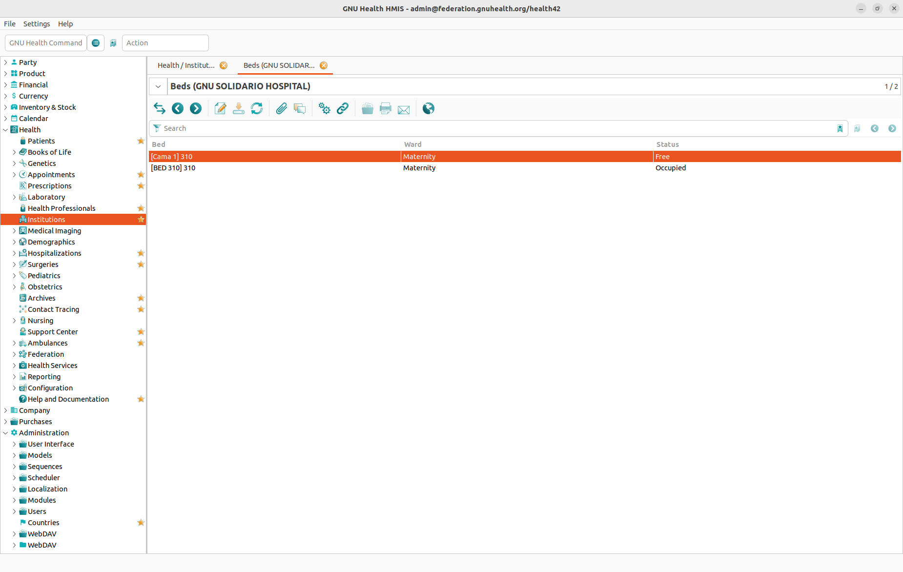
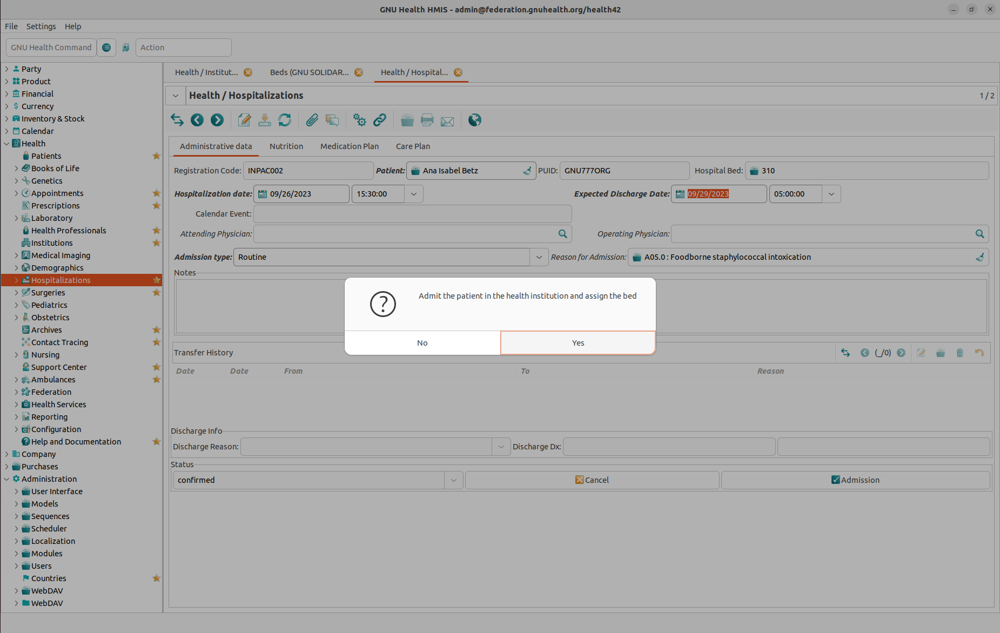

Inpatient Management
Introduction to Inpatient Management
If a patient is not only seeing a doctor (outpatient) but staying at the hospital (inpatient), you have to manage a lot more information about this patient. This information is stored in Hospitalizations records which can be found in the Health → Hospitalizations section of GNU Health. For each stay at the hospital you create a separate Hospitalizations record.
Note: To use the functionality described in this chapter you must have the modules health_inpatient and health_inpatient_calendar installed. (More information about modules.)
Admission Process
At the moment a patient is becoming an inpatient you basically need two things to handle the admission in GNU Health: a Patients record and a Hospitalizations record. If the Patients record does not exist already, create one first (for more information see the Introduction to Patient Management chapter). Then, create a Hospitalizations record.
Administrative Data Tab
In the Administrative Data tab you can store the following data:
Registration Code
Patient: A link to a Patients record (mandatory).
Hospital Bed: A link to a bed (mandatory). For details, see the “Assigning a Bed” section below.
Hospitalization Date: mandatory
Expected Discharge Date: mandatory
Calendar Event
Attending Physician
Operating Physician
Admission Type: mandatory
Reason for Admission
Extra Info
Transfer History
Assigning a Bed


For obvious reasons you can not hospitalize a patient without assigning him a free bed. This happens in the Hospital Bed field, where you link the Hospitalization record to a Bed record. (For more information about how to configure beds in your system, please refer to Health Institutions: Beds.)
There are mainly two ways to do this:


If you already know the ID of the bed for this patient, then you can simply type this ID. As soon as you type, the system will offer you matching IDs to choose from.
If you don’t know the bed ID already and want to check for available beds first, click the button on the right hand side. This will present you a list with all beds including their availability status (free, occupied, reserved).
Once the bed is chosen the system will give you the option to confirm the admission and, if there is no error, the status will change to “confirmed”.
It is important to emphasize that at this point if we check the beds section, this particular bed we just assigned will have a status of “reserved” and that it will change into “occupied” at the moment that we confirm the admission.
Nutrition Tab
In the Nutrition tab you can find all information about eating habits and diets the patient must follow:
Belief: Some religions have specific rules regarding the consumption of food. For example, Jews and Muslims are not allowed to eat pork meat. Therefore it may be helpful to indicate the belief of the patient here. Please note that this is a lookup field where you can select existing entries or create a new entry.
Vegetarian: Choose from “None”, “Vegetarian”, “Lacto-Vegetarian”, “Lacto-Ovo-Vegetarian”, “Pescetarian”, or “Vegan”.
Meals / Diet Program: Add any number of diets. Please note that the Diet field is a lookup field for a Therapeutic Diet record where you can select existing entries or create a new entry.
Other Nutrition Notes / Directions
Managing Beliefes
A Belief record stores the following information:
Belief: The name.
Code: A code you might use in your health institution.
Description: Information about any food related rules for this belief.
Managing Therapeutic Diets
A Therapeutic Diet record stores the following information:
Diet Type
Code
Diet Description and Indications
Medication Plan Tab
In the Medication Plan tab there is a list with all medications (i.e. the application of medicaments) for a patient during his or her hospitalization. Each entry in this list is a Inpatient Medication record, consisting of the following data:
General Info tab:
Medicament
Indication
Treatment Period Start and Treatment Period End
Administration Form
Administration Route
Dosage
Administration Times
Extra Info tab:
Status: Active, Course Completed and/or Discontinued
Adverse Reactions and Notes
Log History: Each entry records Date & Time, Health Professional, Dose, Dose Unit, and Remarks.
Care Plan Tab
In the Care Plan tab there are simply two text fields allowing you to enter all information related to the Nursing Plan and the Discharge Plan.